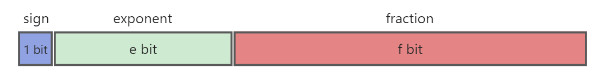

浮点数在计算机中的表示
计算机中，小数的表示方法一般是用浮点数表达法来表示的。
浮点数表达法采用了科学计数法来表达实数，以510.375为例，科学计数法可以表示成以下几种形式，可以看到不同的表示形式其小数点的位置是漂浮不定的，也即浮点数名称的由来。
1 | 5.10375 * 10 ^ 2 |
由以上例子可以看出要表示一个浮点数，需要以下几个部分：
| 符号位S | 尾数M | 基数N | 指数E |
|---|---|---|---|
| 0 | 5.10325 | 10 | 2 |
IEEE 754规范
上述例子可以看出浮点数有很多种写法，现代计算机中的浮点数的表示规范都是遵循IEEE 754标准的，其规定了底数N为2，所有的浮点数由一个三元组表示：$$V(S,M,E) = (-1)^S * M * 2^E$$
在计算机中的表示如下图：

其中：
- S：用一个bit表示，0表示为正数，1表示为负数
- E: 规定这里保存的是阶码的移码
- M: 规定M的有效值范围为
[1,2)之间，也就是说尾数形式默认为1.xyz，为了节约空间，省略小数点前的1，所以尾数实际表达的二进制范围是f+1个bit。
TODO:规格化和非规格化浮点数